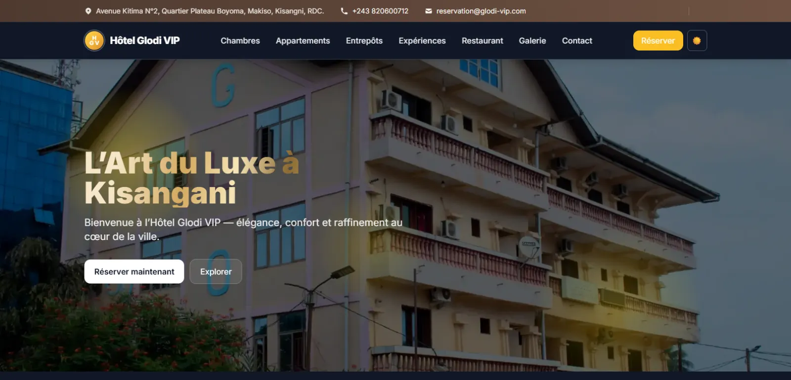
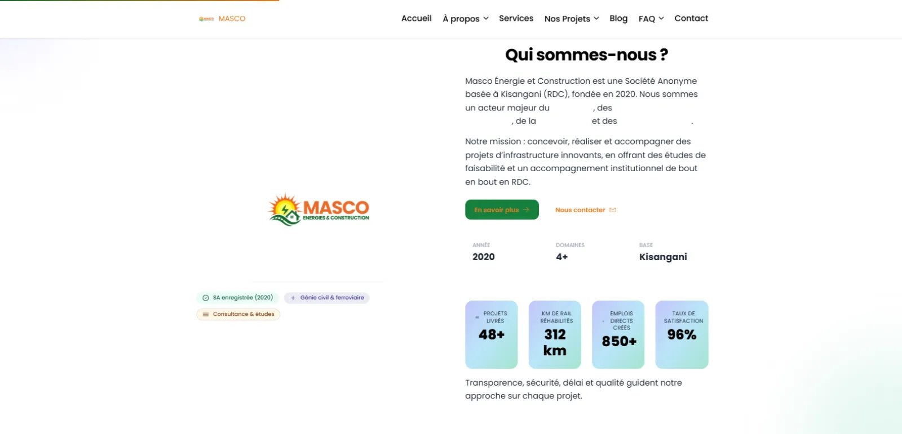
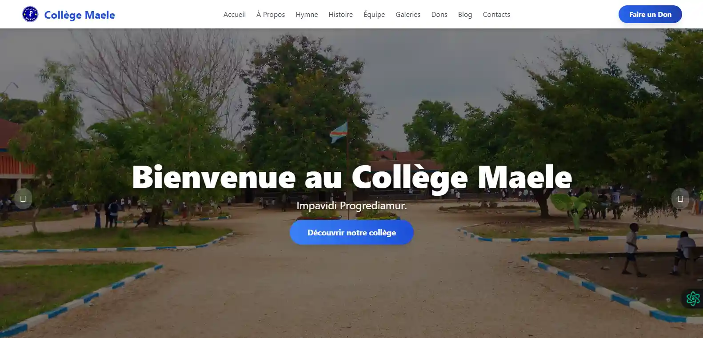
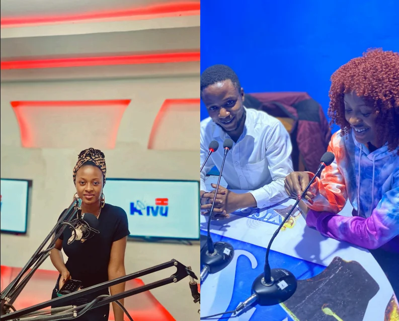

Sites web
Des sites modernes qui présentent votre activité clairement et donnent envie de vous faire confiance.
DÉVELOPPEUR FULLSTACK CONSULTANT DIGITAL
Je conçois des sites web et des solutions digitales qui rendent les entreprises plus visibles, plus crédibles et plus efficaces.
Web Designer
Développeur Fullstack
+
Créatif digital
Architecte d'expériences
Consultant digital
Partenaire de croissance
Une même intention : donner forme aux idées qui méritent d'avancer.
Une bonne solution digitale commence par une bonne question. J'aide les entreprises, les écoles et les indépendants à rendre leurs idées concrètes, simples et utiles.
Des sites modernes qui présentent votre activité clairement et donnent envie de vous faire confiance.
Des plateformes qui simplifient vos opérations et permettent à vos utilisateurs de faire plus en moins de temps.
Des interfaces pensées pour être simples, rapides et agréables à utiliser.
J'aide à transformer une idée ou un problème en solution digitale concrète.
Du besoinau projet visible.
Explorer les réalisationsChaque projet part d'un besoin concret. Ouvrez une réalisation pour découvrir le besoin, ce qui a été construit et le site en ligne.

Présenter un hôtel, ses chambres et ses expériences avec une vitrine premium.
Site hôtelier · Réservation · Django · React · Tailwind

Créer une présence digitale élégante pour présenter les chambres et faciliter la réservation.
Site hôtelier · HTML · CSS · JavaScript

Donner à une entreprise de services une présence claire, visible et orientée vers la demande de devis.
Site institutionnel · Services · Paiement

Structurer la présentation d'une entreprise d'énergies et de construction autour de ses domaines d'activité.
Site institutionnel · Next.js · Docker · Prisma

Une identité digitale pour un média basé à Kisangani, engagé dans l'information et la mise en valeur des réalités locales.
Site média · Identité visuelle · Présence digitale

Concevoir une vitrine claire pour présenter un établissement scolaire, son environnement et sa vision éducative.
Site institutionnel · Éducation · Design web

Donner à une artiste slameuse une scène en ligne : univers, spectacles, prestations et réservation.
Site d'artiste · Maquette mobile cliquable · Design web
NOUVELLE COLLECTION · EBOOKS
Débutant dans le développement ou professionnel expérimenté, cette série vous aide à comprendre l'intelligence artificielle, à mieux l'utiliser et à garder votre capacité de réflexion.
Une série pratique pour commencer sur de bonnes bases ou renforcer ses méthodes de travail, sans abandonner son raisonnement, sa créativité ni sa responsabilité.
Disponible en format numérique · Livraison après confirmation du paiement
Je commence par comprendre votre activité, vos utilisateurs et le problème réel.
Je transforme l'idée en une expérience simple et compréhensible.
Je développe une solution rapide, fiable et adaptée au besoin.
Une solution digitale se perfectionne avec le temps et les usages.
Je suis David, développeur web et consultant digital. J'aime prendre des idées parfois complexes et les transformer en expériences simples, utiles et accessibles.
Mon travail se situe à la rencontre entre technologie, design et compréhension des besoins humains.
Je ne cherche pas seulement à construire quelque chose qui fonctionne. Je cherche à construire quelque chose que les gens comprennent, utilisent et apprécient.
01 04
Pas de chiffres gonflés : tout ce qui suit vient uniquement des projets présentés sur ce site.
Ce que disent les clients et collaborateurs avec qui j'ai travaillé.
« David a transformé notre idée en une application robuste et performante. »Jean-Luc Bekam’Art
« Une collaboration exceptionnelle ! Toujours des solutions créatives. »Marie SM
« Expert full-stack, livraison de haute qualité dans les délais. »Fatima Entrepreneuse
« Rapide et soigné. Je recommande vivement. »Hope Club RFI-Kisangani
« Travail impeccable et communication fluide tout au long du projet. »Patrick Startup Tech
Un système de publication qui associe l'analyse par IA et un vrai suivi humain, pour les entreprises qui n'ont pas le temps de publier.
Lire l’articleGestion simple des articles et génération automatique de pages à partir de Markdown.
Lire l’articleVous n'avez pas besoin de savoir comment la construire. Vous avez simplement besoin de savoir ce que vous voulez améliorer.